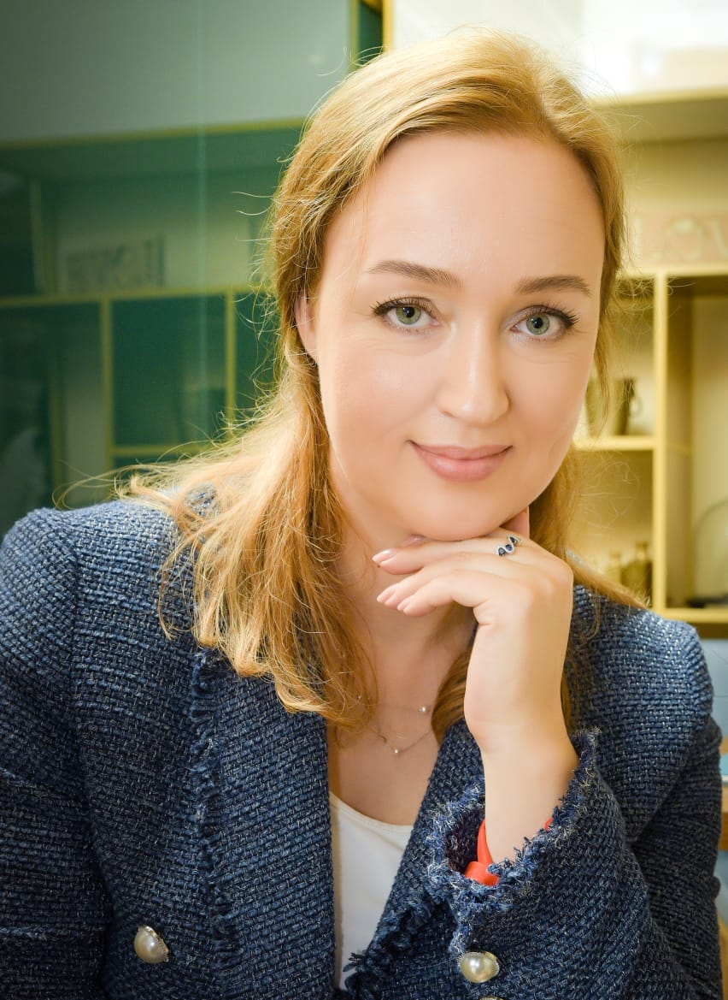
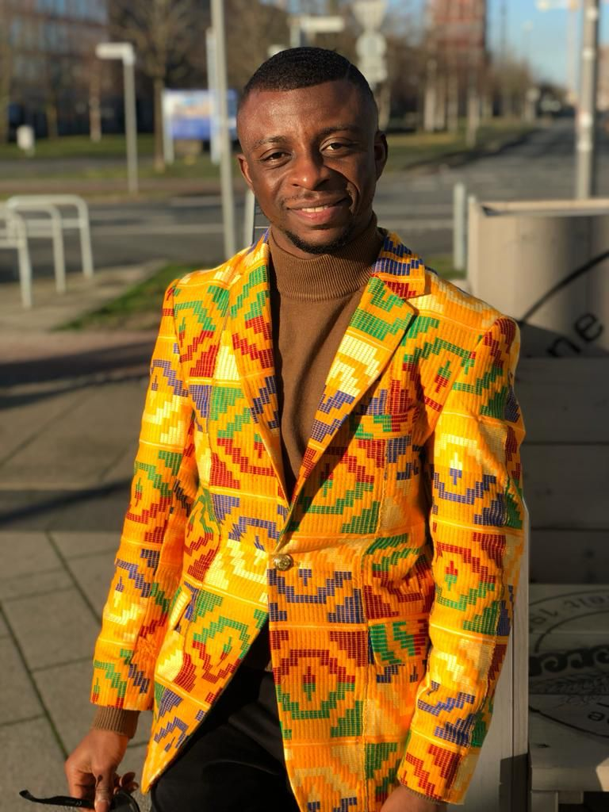
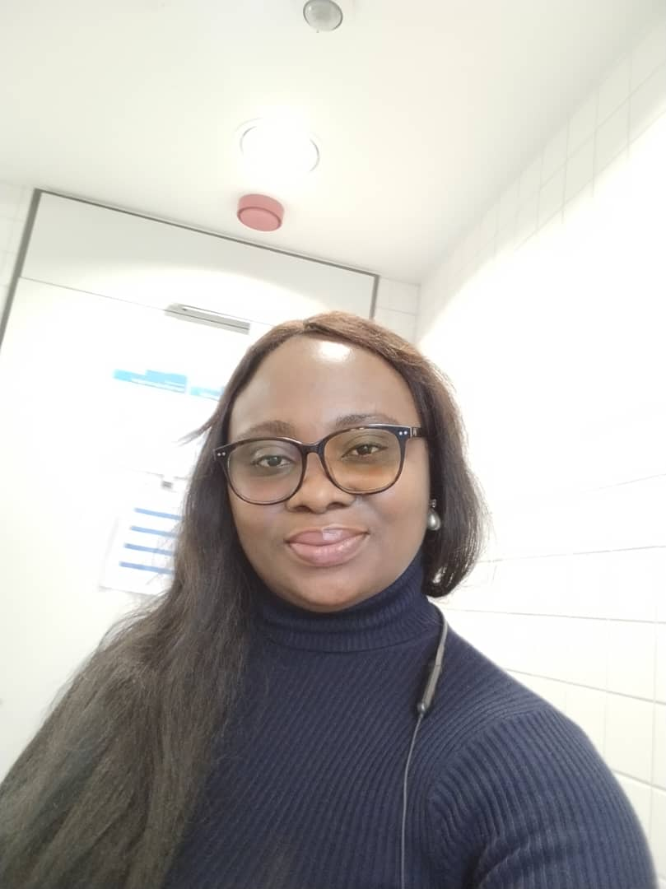
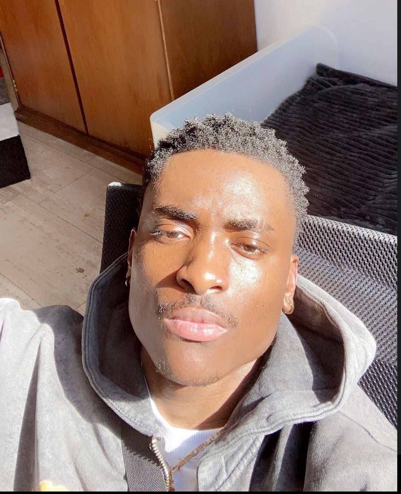

WE PRESENT-THE Team
Services
We are a team of developers, engineers, marketers, designers, managers, all passionate about software development and the work we create together.
Anna Zelenska
I am a Procurement Manager with a University Master Degree. I am interested in IT-technologies, especially in Data Science.
Andy Owusu Ansah
I am an independent researcher from Ghana and committed to achieving the United Nations Sustainable Development Goals. I have about 2 years experience as a field researcher with organizations including Konrad Adenauer-Stiftung foundation, the Departmental of Political Science of the University of Ghana, and the National Accreditations Board of Ghana. I aspire to become an expert in the field of International Relations and Security, hence, currently I am a studying Master of Arts in International Relations at the University of Bremen.
Agboeze Nnenna Aida.
I am a student of Technical University of Darmstadt, studying Materials Science and Engineering. I aspire to become a Data Science Analytics. I am currently working into that and am grateful to be part of ReDi Institute.
Paris Ikhisemoje
I am a full time logistics worker and I aspire to be a web developer. I love to learn new things and I am always looking for new challenges.
Our Projects